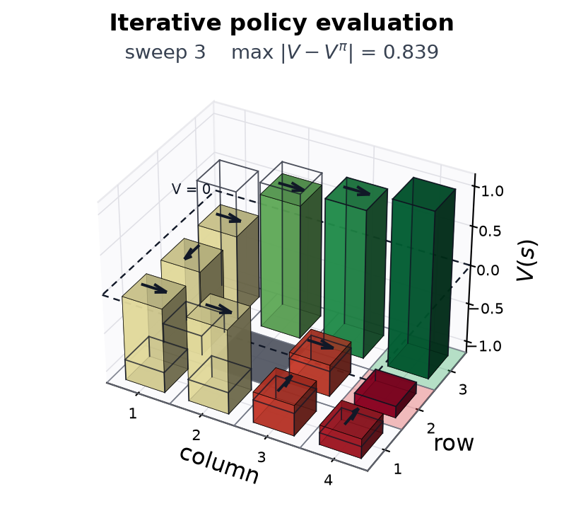
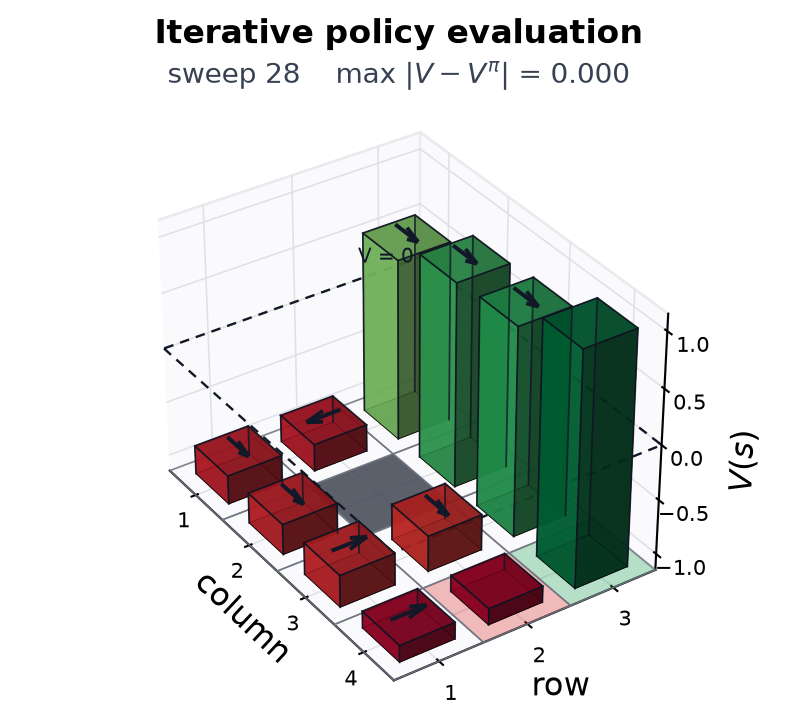
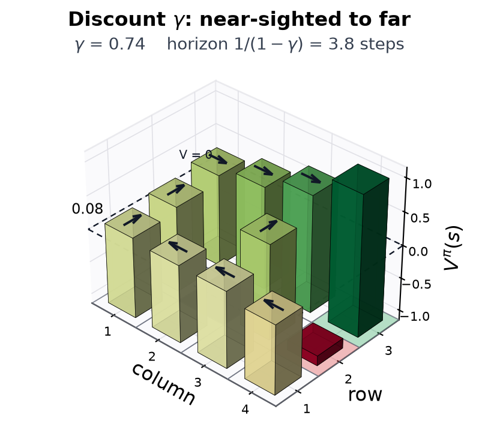
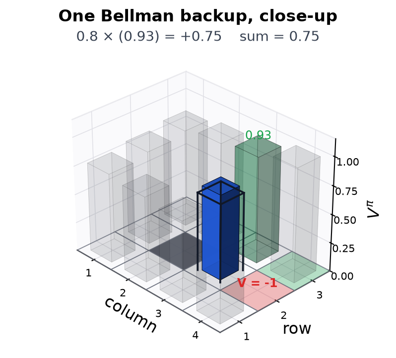
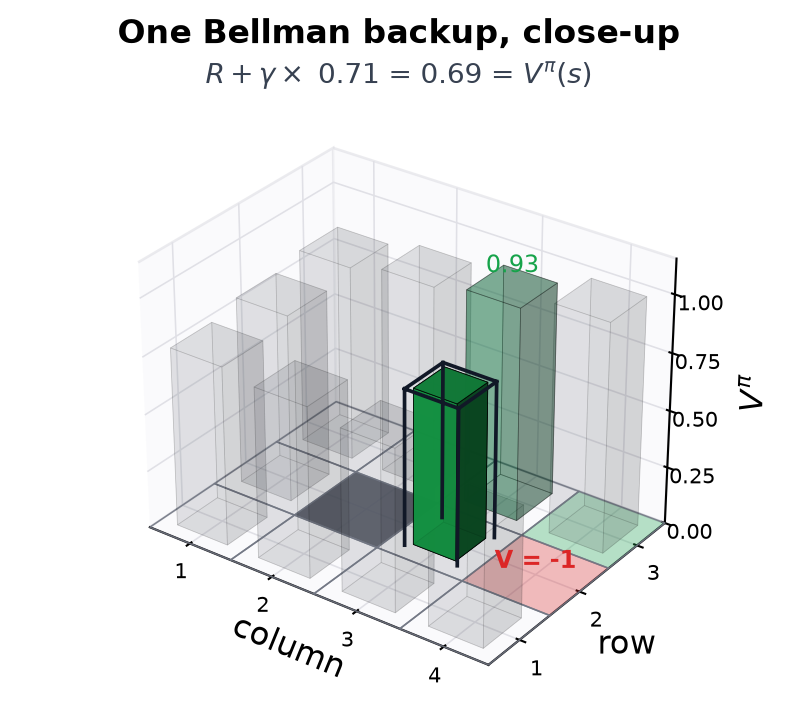
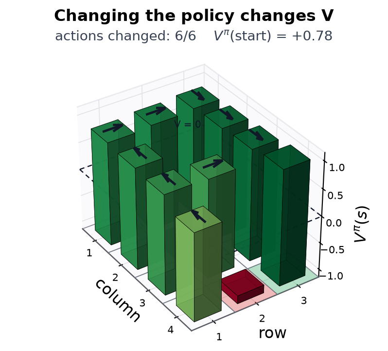
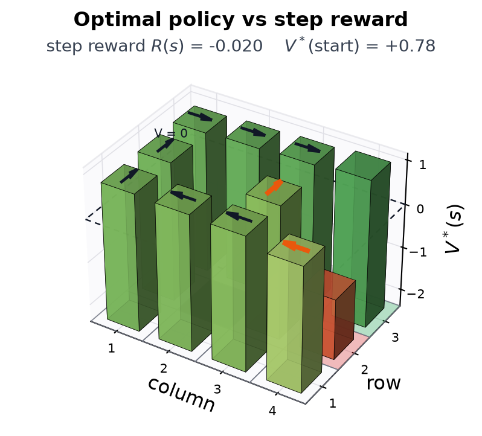
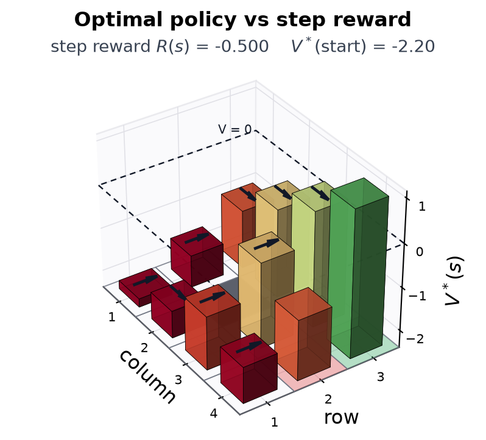
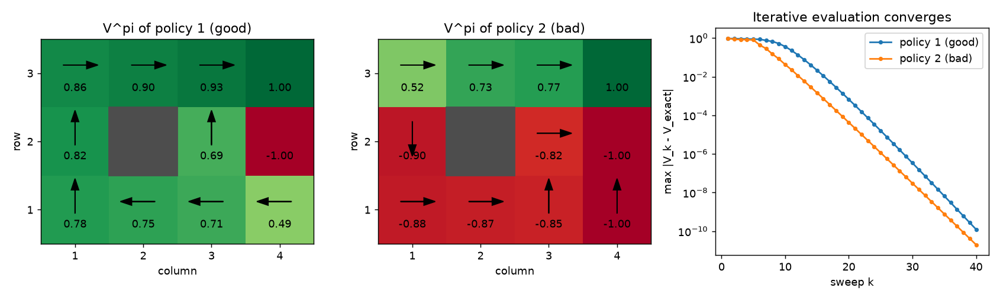

Markov Decision Processes और Bellman Equations
Theory
इस lecture में: Reinforcement Learning, Supervised Learning से कैसे अलग है (सिर्फ़ reward signal, sequential decisions, credit assignment), MDP का tuple \((S, A, \{P_{sa}\}, \gamma, R)\), total payoff और discount factor \(\gamma\), policy \(\pi\), value function \(V^\pi\), Bellman equation और उससे बनने वाला linear system, optimal value function \(V^*\), optimal policy \(\pi^*\), और इन सबका running example: 4x3 gridworld।
1. एक line में idea
अब तक हर training example के साथ सही जवाब \(y\) दिया होता था। Reinforcement Learning (RL) में सही जवाब कोई नहीं बताता। एक agent किसी दुनिया में कदम-दर-कदम actions लेता है, और दुनिया उसे बस एक संख्या लौटाती है: reward, यानी "यह अच्छा हुआ" या "यह बुरा हुआ"। Agent को ऐसा व्यवहार सीखना है जिससे लंबे समय में कुल reward सबसे ज़्यादा हो।
इस problem को गणित में लिखने का ढाँचा Markov Decision Process (MDP) है। और इस lecture की सबसे ज़रूरी बात एक वाक्य में यह है: किसी state की value = अभी का reward + \(\gamma\) गुना अगले state की value का expectation। यही Bellman equation है।
2. Reinforcement Learning, Supervised Learning से कैसे अलग है
Helicopter उड़ाना सिखाना हो तो "इस पल stick को ठीक इतना घुमाओ" जैसा labelled data किसी के पास नहीं है। पर यह बताना आसान है कि helicopter ठीक उड़ रहा है (अच्छा reward) या गिर गया (बड़ा negative reward)। Chess और Go जैसे games में भी यही है: हर चाल का सही जवाब कोई नहीं देता, बस अंत में जीत या हार मिलती है। चलने वाले robots, factory control और network routing में भी यही ढाँचा काम आता है।
| Supervised Learning | Reinforcement Learning | |
|---|---|---|
| सीखने का signal | हर \(x\) के लिए सही \(y\) | सिर्फ़ reward, सही action नहीं |
| फ़ैसले | हर prediction अपने आप में अलग | sequential: आज का action कल का state बदल देता है |
| Data | पहले से दिया हुआ | agent के अपने actions से पैदा होता है |
| Feedback | तुरंत | अक्सर बहुत देर से |
आख़िरी row से credit assignment problem निकलती है। Chess का खेल 60वीं चाल पर हारे, तो गलती किस चाल की थी? Reward देर से आता है और उसका श्रेय (या दोष) पहले के कई actions में बाँटना पड़ता है। आगे आने वाला value function ठीक यही काम करता है: वह हर state को बताता है कि वहाँ से आगे कुल कितना reward मिलने की उम्मीद है।
3. MDP: Setup और Notation
एक MDP पाँच चीज़ों का tuple है: \((S, A, \{P_{sa}\}, \gamma, R)\)।
| Symbol | मतलब |
|---|---|
| \(S\) | states का set: दुनिया की हर संभव हालत |
| \(A\) | actions का set: agent क्या-क्या कर सकता है |
| \(P_{sa}\) | state transition probabilities: state \(s\) में action \(a\) लेने पर अगले state का distribution। \(P_{sa}(s')\) अगला state \(s'\) होने की probability है, और \(\sum_{s'} P_{sa}(s') = 1\) |
| \(\gamma \in [0, 1)\) | discount factor |
| \(R : S \to \mathbb{R}\) | reward function (कई problems में \(R(s, a)\) भी लिखा जाता है) |
"Markov" शब्द का मतलब है कि अगला state सिर्फ़ अभी के state और action पर निर्भर है, उससे पहले के पूरे इतिहास पर नहीं।
Running example: 4x3 gridworld। एक robot 4 columns और 3 rows के grid में चलता है। State को \((\text{column}, \text{row})\) लिखते हैं और \((1,1)\) नीचे-बाएँ कोना है।
- States: \((2,2)\) पर दीवार है, इसलिए कुल 11 states हैं।
- Actions: \(A = \{\uparrow, \rightarrow, \downarrow, \leftarrow\}\)।
- \(P_{sa}\) (noisy चाल): robot 0.8 probability से चुनी हुई दिशा में जाता है, और 0.1-0.1 probability से उसके बाईं या दाईं ओर फिसल जाता है। जैसे \(P_{(3,1)\uparrow}((3,2)) = 0.8\), \(P_{(3,1)\uparrow}((2,1)) = 0.1\), \(P_{(3,1)\uparrow}((4,1)) = 0.1\)। दीवार या किनारे से टकराने पर वह वहीं रह जाता है।
- Rewards: \(R((4,3)) = +1\), \(R((4,2)) = -1\), और बाकी हर state में \(R(s) = -0.02\) (हर कदम की छोटी कीमत, ताकि robot बेवजह न भटके)।
- Terminal states: \((4,3)\) और \((4,2)\) में पहुँचते ही reward मिलता है और खेल खत्म। गणित में: वहाँ से आगे कोई reward नहीं है।
- Discount: \(\gamma = 0.99\)।
4. MDP कैसे चलता है: payoff और discount factor
Agent किसी state \(s_0\) से शुरू करता है और action \(a_0\) चुनता है। दुनिया \(s_1 \sim P_{s_0 a_0}\) से अगला state निकालती है। फिर \(a_1\), फिर \(s_2 \sim P_{s_1 a_1}\), और इसी तरह:
\[s_0 \xrightarrow{a_0} s_1 \xrightarrow{a_1} s_2 \xrightarrow{a_2} s_3 \xrightarrow{a_3} \dots\]
इस रास्ते का total payoff यह है:
\[R(s_0) + \gamma R(s_1) + \gamma^2 R(s_2) + \gamma^3 R(s_3) + \dots\]
चाल noisy है, इसलिए payoff एक random संख्या है। RL का लक्ष्य है ऐसे actions चुनना जिनसे इसका expectation \(E\left[R(s_0) + \gamma R(s_1) + \gamma^2 R(s_2) + \dots\right]\) सबसे बड़ा हो।
\(\gamma\) क्या करता है? समय \(t\) का reward \(\gamma^t\) से गुणा होकर छोटा हो जाता है।
- जल्दी मिला reward ज़्यादा कीमती है। Positive reward जल्दी लेना और negative reward को टालना फ़ायदेमंद हो जाता है। (पैसे की तरह: आज का एक रुपया कल के एक रुपये से ज़्यादा कीमती है।)
- जोड़ सीमित रहता है। अगर \(|R(s)| \le R_{\max}\) है तो \(|\text{payoff}| \le R_{\max}(1 + \gamma + \gamma^2 + \dots) = \frac{R_{\max}}{1 - \gamma}\), चाहे खेल अनंत तक चले।
- दूर तक देखने की सीमा। \(\gamma\) शून्य के पास हो तो agent near-sighted है, सिर्फ़ अगले एक-दो rewards देखता है। \(\gamma\) एक के पास हो तो वह लगभग \(\frac{1}{1-\gamma}\) steps आगे तक की सोचता है (\(\gamma = 0.99\) पर करीब 100 steps)।
5. Policy और Value Function
Policy कोई भी function \(\pi : S \to A\) है। Policy को "चलाने" का मतलब है कि जब भी हम state \(s\) में हों, action \(a = \pi(s)\) लें। Gridworld में policy हर cell में बना एक तीर है।
Policy \(\pi\) का value function बताता है कि state \(s\) से शुरू करके \(\pi\) पर चलते रहें तो payoff का expectation कितना होगा:
\[V^\pi(s) = E\left[ R(s_0) + \gamma R(s_1) + \gamma^2 R(s_2) + \dots \mid s_0 = s, \pi \right]\]
ध्यान दें कि \(V^\pi\) हमेशा किसी policy के साथ जुड़ा है। Policy बदलेगी तो हर state की value बदलेगी।
6. Bellman Equation
Payoff के जोड़ में से पहला term अलग करें और बाकी में से एक \(\gamma\) बाहर निकालें:
\[\begin{aligned} V^\pi(s) &= E\left[ R(s_0) + \gamma \left( R(s_1) + \gamma R(s_2) + \gamma^2 R(s_3) + \dots \right) \mid s_0 = s, \pi \right] \\ &= R(s) + \gamma\, E\left[ R(s_1) + \gamma R(s_2) + \gamma^2 R(s_3) + \dots \mid s_0 = s, \pi \right] \end{aligned}\]
बड़े bracket के अंदर वही payoff है, बस शुरुआत \(s_1\) से हो रही है। Markov property के कारण, अगर \(s_1 = s'\) है तो इस bracket का expectation ठीक \(V^\pi(s')\) है। और \(s_1\) का distribution \(P_{s\pi(s)}\) है। इसलिए \(s'\) पर औसत लेने से Bellman equation मिलती है:
\[V^\pi(s) = R(s) + \gamma \sum_{s' \in S} P_{s\pi(s)}(s')\, V^\pi(s')\]
पहला हिस्सा immediate reward है, जो \(s\) में होने भर से मिल जाता है। दूसरा हिस्सा आगे के सारे discounted rewards का expectation है।
यह एक linear system है। Finite MDP में हर state के लिए ऐसी एक equation है, और हर equation में unknowns \(V^\pi(s')\) सिर्फ़ linear रूप में आते हैं। यानी \(|S|\) equations और \(|S|\) unknowns। Gridworld में, "हमेशा दाएँ" वाले action के साथ state \((3,3)\) की equation यह है:
\[V^\pi((3,3)) = -0.02 + 0.99 \left[ 0.8\, V^\pi((4,3)) + 0.1\, V^\pi((3,3)) + 0.1\, V^\pi((3,2)) \right]\]
सारे values को एक vector \(V^\pi \in \mathbb{R}^{|S|}\) में, rewards को vector \(R\) में, और probabilities को matrix \(P^\pi\) में रखें, जिसकी entry \((s, s')\) में \(P_{s\pi(s)}(s')\) है। तब
\[V^\pi = R + \gamma P^\pi V^\pi \quad\Longrightarrow\quad (I - \gamma P^\pi)\, V^\pi = R \quad\Longrightarrow\quad V^\pi = (I - \gamma P^\pi)^{-1} R\]
\(\gamma < 1\) होने पर \(I - \gamma P^\pi\) हमेशा invertible है, क्योंकि \(P^\pi\) की हर row का जोड़ 1 से ज़्यादा नहीं है और इसलिए \(\gamma P^\pi\) की कोई eigenvalue size में 1 तक नहीं पहुँचती।
7. Optimal Value Function और Optimal Policy
सारी policies में से जो सबसे अच्छा हो सकता है, वह optimal value function है:
\[V^*(s) = \max_\pi V^\pi(s)\]
इसकी भी अपनी Bellman equation है। \(s\) में immediate reward \(R(s)\) तो मिलेगा ही, चाहे action जो हो। उसके बाद सबसे अच्छा यही है कि वह action चुनें जिसके बाद आगे का optimal payoff सबसे बड़ा हो:
\[V^*(s) = R(s) + \max_{a \in A}\, \gamma \sum_{s' \in S} P_{sa}(s')\, V^*(s')\]
और जो action यह maximum देता है, वही optimal policy है:
\[\pi^*(s) = \arg\max_{a \in A} \sum_{s' \in S} P_{sa}(s')\, V^*(s')\]
इस \(\pi^*\) के लिए हर state \(s\) और हर policy \(\pi\) पर \(V^*(s) = V^{\pi^*}(s) \ge V^\pi(s)\) है। यहाँ एक बारीक पर बहुत काम की बात है: वही एक \(\pi^*\) हर start state के लिए optimal है। \((1,1)\) से शुरू करने के लिए एक policy और \((3,1)\) से शुरू करने के लिए दूसरी, ऐसा नहीं करना पड़ता, क्योंकि \(\pi^*(s)\) की परिभाषा में start state कहीं आता ही नहीं।
इस gridworld का \(V^*\) और \(\pi^*\):
| column 1 | column 2 | column 3 | column 4 | |
|---|---|---|---|---|
| row 3 | \(0.86 \rightarrow\) | \(0.90 \rightarrow\) | \(0.93 \rightarrow\) | \(+1\) |
| row 2 | \(0.82 \uparrow\) | दीवार | \(0.69 \uparrow\) | \(-1\) |
| row 1 | \(0.78 \uparrow\) | \(0.75 \leftarrow\) | \(0.71 \leftarrow\) | \(0.49 \leftarrow\) |
State \((3,1)\) पर जाँचें कि \(\leftarrow\) सचमुच \(\uparrow\) से अच्छा है। \(\leftarrow\) लेने पर robot 0.8 से \((2,1)\) में, 0.1 से \((3,2)\) में और 0.1 से (नीचे किनारे से टकराकर) \((3,1)\) में ही रहता है:
\[\begin{aligned} \leftarrow:\quad & 0.8 \times 0.75 + 0.1 \times 0.69 + 0.1 \times 0.71 = 0.740 \\ \uparrow:\quad & 0.8 \times 0.69 + 0.1 \times 0.75 + 0.1 \times 0.49 = 0.676 \end{aligned}\]
\(\uparrow\) छोटा रास्ता है, पर वह \(-1\) के बगल से गुज़रता है। Optimal policy लंबा पर सुरक्षित रास्ता चुनती है। \(\leftarrow\) के साथ \(V^*((3,1)) = -0.02 + 0.99 \times 0.740 \approx 0.71\), जो table से मिलता है।
\(V^*\) की equation में \(\max\) है, इसलिए वह linear नहीं रही और उसे सीधे matrix inverse से हल नहीं किया जा सकता। उसे हल करने वाले algorithms (Value Iteration और Policy Iteration) Lecture 17 में आएँगे।
8. Algorithm: एक fixed policy को evaluate करना
दी हुई policy \(\pi\) के लिए \(V^\pi\) निकालने के तीन तरीके हैं।
(क) Linear system हल करना।
- हर state \(s\) के लिए action \(\pi(s)\) की probabilities उठाकर matrix \(P^\pi\) बनाएँ।
- \((I - \gamma P^\pi) V = R\) को हल करें। यह exact जवाब है, पर खर्च लगभग \(O(|S|^3)\) है।
(ख) Iterative policy evaluation।
- हर state के लिए \(V(s) := 0\) रखें।
- हर state पर Bellman equation का दायाँ हिस्सा लगाएँ: \(V(s) := R(s) + \gamma \sum_{s'} P_{s\pi(s)}(s') V(s')\)।
- Step 2 को तब तक दोहराएँ जब तक \(V\) बदलना बंद न कर दे।
यह क्यों चलता है? \(k\)-वें sweep के estimate को \(V_k\) कहें। Update में से \(V^\pi\) की Bellman equation घटाने पर
\[V_{k+1}(s) - V^\pi(s) = \gamma \sum_{s'} P_{s\pi(s)}(s') \left( V_k(s') - V^\pi(s') \right)\]
दाईं ओर errors का एक weighted औसत है, जिसे \(\gamma\) से गुणा किया गया है। इसलिए \(\max_s |V_{k+1}(s) - V^\pi(s)| \le \gamma \max_s |V_k(s) - V^\pi(s)|\): सबसे बड़ी error हर sweep में कम से कम \(\gamma\) गुना घटती है और \(V_k \to V^\pi\)।
(ग) Monte Carlo। \(s\) से शुरू करके policy को बहुत बार चलाएँ और payoffs का औसत लें। यह सीधे \(V^\pi(s)\) की परिभाषा है, और तब भी काम करता है जब \(P_{sa}\) पता न हो, बस दुनिया में (या simulator में) चलना संभव हो।
9. Practical बातें और आम गलतियाँ
- Reward "क्या चाहिए" बताता है, "कैसे" नहीं। Reward की बनावट से optimal policy बदल जाती है। Gridworld में step reward को \(-0.02\) से \(-0.5\) कर दें तो robot जल्दबाज़ी में \(-1\) के पास से गुज़रने लगता है (Animation 6)।
- \(V^\pi\) और \(V^*\) को न मिलाएँ। \(V^\pi\) की equation linear है और policy दी हुई है। \(V^*\) की equation में \(\max_a\) है।
- Terminal states: terminal state की value बस उसका reward है। आम bug यह है कि code terminal state से भी आगे चलता रहता है और \(+1\) बार-बार जुड़ता रहता है।
- State में पूरी जानकारी हो। Markov property तभी सही है जब state में आगे का अंदाज़ा लगाने लायक सब कुछ हो। Helicopter के state में सिर्फ़ position नहीं, velocity भी चाहिए।
- \(\gamma\) का चुनाव: \(\gamma\) को 1 के पास रखने से agent दूर की सोचता है, पर iterative तरीके धीमे हो जाते हैं। \(\gamma = 1\) तभी ठीक है जब हर episode का खत्म होना पक्का हो।
- \(P_{sa}\) अक्सर पता नहीं होता। असली problems में उसे data से सीखना पड़ता है (Lecture 17)।
10. खुद से पूछें
- अगर \(\gamma = 0\) हो, तो \(V^\pi(s)\) क्या होगा, और optimal policy किस चीज़ को देखेगी?
- Gridworld में \(V^*((3,2)) = 0.69\) है, जबकि वह \(+1\) से सिर्फ़ दो कदम दूर है और \((1,3)\), जो तीन कदम दूर है, \(0.86\) पर है। ऐसा क्यों?
- Bellman equation में \(V^\pi(s)\) दोनों ओर आ सकता है (जैसे \((3,3)\) की equation में)। फिर भी linear system का हल unique क्यों है?
3D Animations


क्या देखें: फ़र्श पर 4x3 gridworld है (हरा cell \(+1\), लाल cell \(-1\), गहरा cell दीवार) और ऊँचाई अब तक का discounted payoff \(R(s_0) + \gamma R(s_1) + \dots\) है। Policy \(\pi\) (फ़र्श के तीर) fixed है, पर चाल noisy है: 0.8 probability से agent तीर की दिशा में जाता है, 0.1-0.1 से बगल में फिसल जाता है। पहला episode धीरे-धीरे चलता है: हर step पर \(-0.02\) जुड़ता है और अंत में terminal reward की छलाँग लगती है। फिर सैकड़ों episodes जुड़ते हैं: कुछ \(+1\) पर खत्म होते हैं, कुछ \(-1\) पर। इन सबके payoff का औसत (नीला निशान) धीरे-धीरे \(V^\pi(s_0)\) (काली रेखा) पर टिक जाता है। यही value function की परिभाषा है: payoff का expectation।



क्या देखें: फ़र्श पर gridworld और तीरों में एक fixed (और काफ़ी खराब) policy \(\pi\) है। हर bar की ऊँचाई उस state का value estimate है; शून्य से नीचे लटके bars negative values हैं। शुरुआत \(V(s) = 0\) से होती है और हर sweep में सारे states पर Bellman equation का दायाँ हिस्सा लगाया जाता है: \(V(s) := R(s) + \gamma \sum_{s'} P_{s\pi(s)}(s') V(s')\)। देखिए कि जानकारी terminal states से बाहर की ओर फैलती है: \(+1\) के पास वाले bars ऊपर उठते हैं, \(-1\) की ओर ले जाने वाले states नीचे धँसते हैं। काले wire boxes linear system से निकला सही \(V^\pi\) हैं; कुछ ही sweeps में bars उनमें ठीक बैठ जाते हैं।



क्या देखें: Policy वही रहती है (notes वाली अच्छी policy, फ़र्श के तीर), सिर्फ़ discount factor \(\gamma\) को 0.05 से 0.99 तक बढ़ाया जा रहा है, और हर \(\gamma\) के लिए सही \(V^\pi\) दिखाया गया है। \(\gamma\) छोटा हो तो agent near-sighted है: सिर्फ़ \(+1\) से सटे state को कुछ value मिलती है, बाकी सब लगभग शून्य हैं क्योंकि दूर का reward \(\gamma^t\) से दबकर गायब हो जाता है। जैसे-जैसे \(\gamma\) 1 के पास जाता है, \(+1\) की रोशनी पूरे grid में फैल जाती है और start state (1,1) भी ऊँचा हो जाता है। Status में \(1/(1-\gamma)\) मोटे तौर पर बताता है कि agent कितने steps आगे तक देख रहा है।



क्या देखें: यहाँ सिर्फ़ एक state \(s = (3,2)\) की Bellman equation को टुकड़ों में जोड़ा जा रहा है। Policy का action "ऊपर" है: 0.8 probability से agent \((3,3)\) में पहुँचता है, 0.1 से दीवार से टकराकर वहीं \((3,2)\) में रहता है, और 0.1 से \(-1\) वाले \((4,2)\) में गिरता है। हर अगले state के value bar का उतना हिस्सा कटकर \(s\) पर आता है जितनी उसकी probability है: \(0.8 \times 0.93\), फिर \(0.1 \times 0.69\), फिर \(0.1 \times (-1)\), जो ढेर को घटा देता है। अंत में ढेर को \(\gamma\) से गुणा करके \(R(s) = -0.02\) जोड़ते हैं, और वह काले wire box \(V^\pi(s) = 0.69\) में ठीक बैठ जाता है। ध्यान दें कि \(V^\pi(s)\) खुद अपनी equation के दाईं ओर भी आया है, इसीलिए सारे states को साथ में हल करना पड़ता है।



क्या देखें: Value function policy पर निर्भर है: हर policy का अपना landscape \(V^\pi\) है। शुरुआत notes वाली खराब policy से होती है, जिसमें नीचे के सारे states \(-1\) की ओर बहते हैं और उनके bars negative हैं। फिर एक-एक state का तीर बदला जाता है (नारंगी तीर), और हर बार पूरा \(V^\pi\) दोबारा निकाला जाता है। देखिए कि एक state का action बदलने से सिर्फ़ उसी का bar नहीं, उस तक पहुँचने वाले सारे states के bars उठ जाते हैं। अंत की policy हर state में पहली से बेहतर है: \(V^{\pi_2}(s) \ge V^{\pi_1}(s)\)। जो policy हर state में सबसे ऊँची हो, वही \(\pi^*\) है।



क्या देखें: अब bars optimal value function \(V^*\) हैं और तीर optimal policy \(\pi^*\), जो हर state में उस action को चुनती है जिससे अगले state का expected \(V^*\) सबसे बड़ा हो: तीर landscape की चढ़ाई की ओर हैं। यहाँ हर साधारण state का reward \(R(s)\) को 0 से \(-0.5\) तक घटाया जा रहा है। \(R(s) = 0\) पर agent को कोई जल्दी नहीं, वह \(-1\) से पूरी तरह बचता है (दीवार की ओर मुँह कर लेता है)। \(-0.02\) पर notes वाली policy मिलती है। Penalty बढ़ने पर एक-एक करके तीर पलटते हैं (नारंगी) और agent \(-1\) के पास से छोटा रास्ता लेने लगता है; बहुत बड़ी penalty पर \((4,1)\) से वह सीधे \(-1\) में कूद जाता है। यानी \(\pi^*\) reward function की बनावट से तय होती है।
Python Example
इसे खुद चलाएँ: dhruv_ai_tutorial/.venv/bin/python dhruv_ai_tutorial/chapters/L16_mdp_bellman/example.py
"""Lecture 16 example: 4x3 gridworld पर policy evaluation शुरू से (सिर्फ़ NumPy). यहाँ इस्तेमाल किया गया gridworld बनाते हैं (noisy चाल: 0.8 सीधा, 0.1-0.1 बगल में)। फिर एक fixed policy का V^pi तीन तरीकों से निकालते हैं: (1) Bellman linear system हल करके, (2) Bellman equation को बार-बार लगाकर, (3) Monte Carlo rollouts से। अंत में दो policies की तुलना करते हैं। """ import numpy as np import matplotlib.pyplot as plt rng = np.random.default_rng(0) GAMMA = 0.99 # ---------- 1. Gridworld: state = (column, row), (1, 1) नीचे-बाएँ कोने में ---------- COLS, ROWS = 4, 3 WALL, GOAL, PIT, START = (2, 2), (4, 3), (4, 2), (1, 1) states = [(c, r) for r in range(1, ROWS + 1) for c in range(1, COLS + 1) if (c, r) != WALL] index = {s: i for i, s in enumerate(states)} n_states = len(states) # 11 states terminal = [index[GOAL], index[PIT]] moves = {"^": (0, 1), ">": (1, 0), "v": (0, -1), "<": (-1, 0)} actions = list(moves) # क्रम घड़ी की दिशा में: ^ > v < R = np.full(n_states, -0.02) # हर साधारण state का reward R[index[GOAL]], R[index[PIT]] = 1.0, -1.0 def move(s, a): """Action a की दिशा में एक कदम; दीवार या किनारे से टकराएँ तो वहीं रहें।""" nxt = (s[0] + moves[a][0], s[1] + moves[a][1]) return nxt if nxt in index else s # ---------- 2. Transition probabilities P[a, s, s'] ---------- # Terminal states की rows zero रहती हैं: वहाँ reward मिलकर episode खत्म हो जाता है। P = np.zeros((4, n_states, n_states)) for s in states: if s in (GOAL, PIT): continue for k, a in enumerate(actions): left, right = actions[(k - 1) % 4], actions[(k + 1) % 4] # a के दोनों perpendicular for direction, prob in ((a, 0.8), (left, 0.1), (right, 0.1)): P[k, index[s], index[move(s, direction)]] += prob def make_policy(rows): """ऊपर की row से नीचे की ओर लिखे तीरों को action indices के array में बदलें।""" pi = np.zeros(n_states, dtype=int) for k, line in enumerate(rows): for c, ch in enumerate(line, start=1): if (c, ROWS - k) in index and ch in moves: pi[index[(c, ROWS - k)]] = actions.index(ch) return pi policies = {"1 (good)": make_policy([">>>.", "^.^.", "^<<<"]), # notes की optimal policy "2 (bad)": make_policy([">>>.", "v.>.", ">>^^"])} # notes की खराब policy # ---------- 3. Policy evaluation, तरीका 1: linear system (I - gamma P_pi) V = R ---------- def evaluate_exact(pi): P_pi = P[pi, np.arange(n_states)] # row s = P_{s, pi(s)} return np.linalg.solve(np.eye(n_states) - GAMMA * P_pi, R) # ---------- 4. तरीका 2: Bellman equation को बार-बार लगाना ---------- def evaluate_iterative(pi, sweeps): P_pi = P[pi, np.arange(n_states)] V, history = np.zeros(n_states), [] for _ in range(sweeps): V = R + GAMMA * P_pi @ V # सारे states एक साथ update (synchronous) history.append(V.copy()) return V, history # ---------- 5. तरीका 3: Monte Carlo, यानी सचमुच episodes चलाकर payoff का औसत ---------- def rollout(pi, start=START): i, discount, payoff = index[start], 1.0, 0.0 while True: payoff += discount * R[i] # gamma^t * R(s_t) if i in terminal: return payoff, i i = rng.choice(n_states, p=P[pi[i], i]) # noisy चाल discount *= GAMMA def show(V, pi): for r in range(ROWS, 0, -1): cells = [] for c in range(1, COLS + 1): if (c, r) == WALL: cells.append(" ####") else: i = index[(c, r)] cells.append(f"{V[i]:+.2f} {' ' if i in terminal else actions[pi[i]]}") print(" " + " ".join(cells)) exact, histories = {}, {} for name, pi in policies.items(): exact[name] = evaluate_exact(pi) histories[name] = evaluate_iterative(pi, 40)[1] print(f"Policy {name}: linear system से V^pi (तीर = policy का action)") show(exact[name], pi) print("\nIterative evaluation: max |V_k - V_exact|") print(" sweeps k policy 1 policy 2") for k in (1, 5, 10, 20, 40): gaps = [np.abs(histories[name][k - 1] - exact[name]).max() for name in policies] print(f" {k:8d} {gaps[0]:.2e} {gaps[1]:.2e}") print("\nMonte Carlo check: start (1,1) से 4000 episodes") print(" policy exact V(start) MC mean +- std.err ends at +1") for name, pi in policies.items(): runs = [rollout(pi) for _ in range(4000)] payoffs = np.array([p for p, _ in runs]) at_goal = np.mean([end == index[GOAL] for _, end in runs]) print(f" {name:<10} {exact[name][index[START]]:+.4f} {payoffs.mean():+.4f} +- " f"{payoffs.std() / np.sqrt(len(payoffs)):.4f} {100 * at_goal:5.1f}%") # ---------- 6. Bellman equation को हाथ से जाँचें: state (3,1), policy 1 का V ---------- V = exact["1 (good)"] s = index[(3, 1)] q = {a: P[k, s] @ V for k, a in enumerate(actions)} # sum_s' P_sa(s') V(s') print("\nState (3,1) पर sum_s' P_sa(s') V(s'): " + " ".join(f"{a} {q[a]:.3f}" for a in actions)) print(f"सबसे अच्छा action '<' है, और R + gamma * {q['<']:.3f} = {R[s] + GAMMA * q['<']:.3f} = V(3,1)") better = np.all(exact["1 (good)"] >= exact["2 (bad)"]) print(f"क्या policy 1 हर state में policy 2 से अच्छी या बराबर है? {'हाँ' if better else 'नहीं'}") # ---------- 7. Plots ---------- fig, axes = plt.subplots(1, 3, figsize=(13, 3.9)) for ax, (name, pi) in zip(axes, policies.items()): grid = np.full((ROWS, COLS), np.nan) for (c, r), i in index.items(): grid[r - 1, c - 1] = exact[name][i] ax.imshow(grid, origin="lower", cmap="RdYlGn", vmin=-1, vmax=1, extent=(0.5, 4.5, 0.5, 3.5)) ax.add_patch(plt.Rectangle((1.5, 1.5), 1, 1, color="0.3")) for (c, r), i in index.items(): ax.text(c, r - 0.22, f"{exact[name][i]:.2f}", ha="center", va="center", fontsize=10) if i not in terminal: dx, dy = moves[actions[pi[i]]] ax.arrow(c - 0.17 * dx, r + 0.12 - 0.17 * dy, 0.34 * dx, 0.34 * dy, head_width=0.11, color="k") ax.set(title=f"V^pi of policy {name}", xticks=[1, 2, 3, 4], yticks=[1, 2, 3], xlabel="column", ylabel="row") for name in policies: gap = [np.abs(h - exact[name]).max() for h in histories[name]] axes[2].semilogy(range(1, len(gap) + 1), gap, "o-", ms=3, label=f"policy {name}") axes[2].set(xlabel="sweep k", ylabel="max |V_k - V_exact|", title="Iterative evaluation converges") axes[2].legend() fig.tight_layout() fig.savefig("result.png", dpi=130)
Policy 1 (good): linear system से V^pi (तीर = policy का action)
+0.86 > +0.90 > +0.93 > +1.00
+0.82 ^ #### +0.69 ^ -1.00
+0.78 ^ +0.75 < +0.71 < +0.49 <
Policy 2 (bad): linear system से V^pi (तीर = policy का action)
+0.52 > +0.73 > +0.77 > +1.00
-0.90 v #### -0.82 > -1.00
-0.88 > -0.87 > -0.85 ^ -1.00 ^
Iterative evaluation: max |V_k - V_exact|
sweeps k policy 1 policy 2
1 9.52e-01 9.75e-01
5 8.78e-01 8.01e-01
10 3.62e-01 4.28e-02
20 6.66e-04 4.25e-05
40 1.24e-10 1.99e-11
Monte Carlo check: start (1,1) से 4000 episodes
policy exact V(start) MC mean +- std.err ends at +1
1 (good) +0.7803 +0.7806 +- 0.0036 98.6%
2 (bad) -0.8846 -0.8947 +- 0.0082 8.4%
State (3,1) पर sum_s' P_sa(s') V(s'): ^ 0.674 > 0.532 v 0.691 < 0.736
सबसे अच्छा action '<' है, और R + gamma * 0.736 = 0.709 = V(3,1)
क्या policy 1 हर state में policy 2 से अच्छी या बराबर है? हाँ
